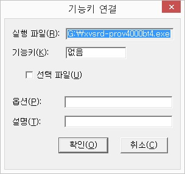
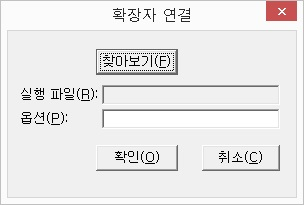

탐색창에서 사용되는 기능들은 음성을 통해 상황을 알려줍니다. 파일이나 폴더를 선택하거나 해제할 경우, 폴더를 이동했을 경우 등 어떤 작업이 이루어질 때 변화되는 상황이 음성 메세지로 자세하게 출력됩니다.
하지만 이런 메시지가 불필요하게 느껴질 경우 [설정] 메뉴의 [음성 메시지 알림] 메뉴를 사용해 메시지를 해제할
수 있습니다. 이 메뉴는 체크 메뉴이기 때문에 한 번 사용할 때마다 선택 상태가 토글됩니다.
음성 메시지를 해제하면 진행되는 상황의 파악이 어려울 수 있기 때문에 필요한 경우에 한해 제한적으로 사용하는 것을 권장합니다.
기본적으로 탐색창도 독서창과 마찬가지로 <Esc>키를 사용하여 종료할 수 있습니다. 이는 '이스케입키로 종료' 기능이 선택되어 있기 때문에 가능한 것입니다. 이 설정을 변경하고자 한다면 [설정] 메뉴의 [이스케입키로 종료] 메뉴를 사용합니다. 체크메뉴이기 때문에 한 번 실행할 때마다 설정 상태가 토글됩니다.
만일 이 기능이 해제되어 있으면 탐색창은 <Esc>키를 사용해 종료할 수 없게 됩니다.
탐색창에서는 자신이 원하는 기능키에 프로그램을 등록하여 사용할 수 있습니다. 이를 기능키 연결이라고 하며, 이렇게 기능키를 등록한 후에는 해당 키를 눌러 키와 연결된 프로그램을 실행할 수 있습니다.
다음의 절차에 따라 기능키를 연결합니다.

① 등록을 원하는 프로그램(*.EXE)파일을 찾습니다.
② [설정] 메뉴의 [기능키 연결] 메뉴를 실행합니다.
③ '기능키 연결' 대화상자가 출력되면서 '실행 파일' 편집창에 실행 파일의 이름이 나타납니다.
기능키 항목에서 프로그램을 실행할 때 사용할 키를 누릅니다.
④ '선택 파일' 체크상자를 원하는 상태로 설정합니다.
해제된 경우 단순히 프로그램만을 실행하고, 선택된 경우에는 기능키를 눌러 프로그램을 실행할 당시 선택되어 있는 파일을 프로그램에
전달합니다.
⑤ 프로그램에 전달할 옵션이 있는 경우 '옵션' 편집창에 옵션을 입력합니다.
⑥ '설명' 편집창에 설명을 적습니다.
⑦ '확인' 버튼을 눌러 설정을 적용합니다.
* 기능키를 사용할 때에는 반드시 탐색창이 활성화되어 있는 상태에서 사용해야 합니다.
확장자 연결은 윈도우즈 탐색기의 연결 프로그램과 같은 기능입니다.
탐색창에서 데이터 파일을 선택한 다음 <Enter>키를 누르면 해당 파일 확장자와 연결된 프로그램을 먼저 찾고, 해당 프로그램을 실행하면서 데이터 파일을 열어주게 됩니다.
다음 순서에 따라 확장자 연결 설정을 합니다.

① 연결하고자 하는 확장자를 가진 파일을 찾아 위치시킵니다.
② [설정] 메뉴의 [확장자 연결] 메뉴를 실행합니다.
③ '확장자 연결' 대화상자가 나타나면 '찾아보기' 버튼을 눌러 '열기' 대화상자를
호출합니다.
④ 연결하고자 하는 프로그램을 찾은 후 '열기' 버튼을 누릅니다.
'열기' 대화상자가 닫히고 '실행 파일' 편집창에 지정한 프로그램이 표시됩니다.
⑤ 추가할 옵션이 있다면 '옵션' 편집창에 입력합니다.
⑥ '확인' 버튼을 눌러 설정을 적용합니다.
* 일반적인 문서 파일과 미디어 파일들은 독서창(xvbrd.exe)에 확장자 연결이 되어 있습니다.
연결된 데이터 파일 확장자는 다음과 같습니다.
1. 문서 파일: *.txt, *.cap, *.doc, *.htm, *.rtf 등
2. 미디어 파일: *.avi, *.mp3, *.asf, *.ogg, *.wma, *.wmv 등
[설정] 메뉴의 [기능키 및 확장자 연결 정보] 메뉴를 실행하면 현재 설정되어 있는 기능키와 확장자의 등록 상태를 목록으로 보여줍니다.
이 목록에서는 <Del>키를 사용하여 더이상 필요없는 항목을 삭제할 수 있습니다.
컴퓨터와 브레일노트 사이에 데이터 파일을 전송하는 경우, 파일 포멧의 변환 여부를 설정합니다.
사용자의 설정에 따라 원본과 동일한 파일 형식이나 사용자가 지정한 형식으로 변환하여 파일을 전송할 수 있습니다.
[파일 변환 설정] 메뉴를 선택하면 '변환 설정' 대화상자가 나타나며, 각 항목에 대한 설명은 다음과 같습니다. 각 항목간 이동은 <Tab> 키를 사용합니다.
1. 파일 복사시 변환 설정 체크상자
장치간 파일을 전송할 때, 원본 파일 형식을 그대로 유지하면서 복사하고 싶다면 체크상자를 해제하고, 파일 복사시 복사될 파일의 포멧을 변환하고 싶다면 체크상자를 선택한 다음 아래의 목록상자에서 파일 형식을 지정해 줍니다.
2. 브레일노트로 파일전송시 형식 지정 목록상자
컴퓨터 내의 파일을 브레일노트로 전송하는 경우, 변환될 파일의 포멧을 지정해 줍니다.
목록에는 변환을 지원하는 hwp, doc, html, xls, ppt 등의 파일 형식이 나타나 있습니다. 목록상자에서 선택이 해제된 파일 형식은
원본 그대로 전송이 이루어지며,
원하는 파일 포멧 항목에서 <Space> 키를 누르면 변환될 파일 형식이 지정됩니다. <Space> 키를 반복해서 누르면 변환 파일 형식이 txt, kwt, brf 등으로 차례대로
변경됩니다.
3. 컴퓨터로 파일전송시 형식 지정 목록상자
브레일노트에서 컴퓨터로 파일을 전송할 때 변환 형식을 지정합니다.
현재 버전에서는 .kwt 파일을 .txt 파일로 자동 변환할 수 있으며, 목록 항목이 해제되어 있는 경우 원본 파일 형식 그대로 복사됩니다.
4. 확인, 취소 버튼
모든 설정이 끝난 후에는 '확인' 버튼을 눌러 설정을 저장하도록 합니다.
대화상자 설정시 설정이 잘못되었다면 '취소' 버튼을 눌러 현재의 설정을 취소할 수 있습니다.
[파일] -> [변환] 메뉴를 이용하여 일반 문서 파일을 .brf 형태의 점자 파일로 변환할 때 적용할 형식을 지정합니다.
[점자 번역 옵션] 메뉴를 선택하면, '점자 번역 설정' 대화상자가 출력됩니다. 각 항목을 <Tab> 키를 눌러 이동하면서 점자 파일의 출력 형식을 지정합니다.
1. 한글 그레이드2
문서 내의 한글을 점자로 변환할 때 그레이드2 형식을 사용할 것인지 지정합니다.
2. 영어 그레이드2
그레이드2 형식을 기준으로 영어를 변환할 것인지 설정합니다.
3. 미정의 문자 처리
문서 내의 '^1234^'과 같은 미정의 문자에 대해 변환 여부를 선택합니다.
현재 탐색창에 선택되어 있는 파일의 내용을 오디오 파일로 변환할 때, 적용될 파일 형식과 문서 기준을 설정합니다. 독서창에서는 문서 파일만을 오디오 파일로 변환할 수 있으나, 탐색창에서는 문서 파일은 물론 AVI나 WMV 같은 동영상 파일도 오디오 파일로 변환할 수 있습니다.
1. 파일 포멧
선택된 파일의 오디오 변환은 MP3과 WAV 형식이 지원되며, 다음의 절차에 따라 설정을 진행합니다.
① 탐색창에서 <Alt> 키를 눌러 주메뉴를 열고 [설정] -> [오디오 변환] -> [파일 포멧] 메뉴를 차례대로 실행합니다.
② '오디오 변환 설정' 대화상자가 출력되면 처음에 위치한 목록에서 파일 형식을 선택합니다. 변환 가능한 파일 형식은 MP3와 WAV
파일입니다.
③ 파일 형식을 선택한 이후, <Tab> 키를 눌러 Sample Rate를 지정하는 목록상자로 이동하여 원하는 값을 지정합니다. 텍스트 파일을 변환할 경우 기본으로 설정하면 샘플 레이트가 16000으로 지정됩니다.
④ 음질 설정 목록에서 원하는 음질을 선택합니다.
파일 형식을 MP3로 설정한 경우 음질을 32K에서 320K까지 선택할 수 있으며, WAV로 선택한 경우 384에서 768까지 지정할 수
있습니다. 음질을 좋게 선택하면 파일의 사이즈가 증가함으로 사용자의 MP3 플레이어 용량에 따라 적절한 음질을 선택합니다.
⑤ 채널을 선택하는 라디오 버튼으로 이동한 다음, 사용자가 원하는 채널을 선택합니다. 텍스트 파일 변환의 경우 기본은 모노이며, 동영상 파일은 원래 파일의 채널이 그대로 적용됩니다.
⑥ '확인' 버튼을 눌러 지금까지의 설정을 적용합니다. <ESC> 키나 '취소' 버튼을 누르면 설정값이 취소됩니다.
2. 문서 기준
오디오 파일 변환시 파일을 하나로 만들 것인지, 기준에 따라 여러 개로 분할하여 만들 것인지 설정합니다.
① 탐색창에서 <Alt> 키를 눌러 주메뉴를 열고 [설정] -> [오디오 변환] -> [문서 기준] 메뉴를 차례대로 실행합니다.
② '문서 기준 설정' 대화상자가 나타나면 방향키를 이용하여 분할 기준을 선택한 뒤, '확인' 버튼을 눌러 설정을 적용합니다.
사용자가 선택할 수 있는 기준은 다음의 네 가지가 있습니다.
- 라인: 한 파일의 내용을 지정한 라인 수만큼으로 제한합니다.
- 시간: 한 파일의 내용을 지정한 시간만큼으로 제한합니다. 시간은 분 단위입니다.
- 목차: 한 파일에 하나의 목차 분량만을 담습니다.
- 없음: 파일을 분할하지 않고 한 개의 파일로 생성합니다.
* 라인이나 시간 옵션을 선택한 경우 '값' 편집창이 활성화됩니다. 여기에 사용자가 원하는 라인수나 시간을 입력합니다.
* 분할된 파일은 순서에 따라 파일명 끝부분에 -001, -002, -003과 같이 숫자가 붙어 순서를 구분해 줍니다.
* 파일 분할 옵션을 선택한 경우 하단에 '파일 번호' 체크박스가 활성화됩니다. 이 옵션을 선택하게 되면 파일 순서가 내용 앞에 출력됩니다.
3. 자막 파일 처리
동영상 파일과 자막 파일이 같은 폴더에 존재하는 경우, 오디오 파일 변환시 자막 파일까지 음성으로 출력하여 변환할 것인지 선택합니다. 지원되는 자막 파일의 형태는 SMI 파일 형식입니다.
이 옵션은 체크 메뉴로 구성되어 있습니다. [자막 파일 처리] 메뉴에서 <Enter> 키를 누르면 메뉴가 선택되고, 선택된 상태에서 다시 <Enter> 키를 누르면 선택이 해제됩니다.
4. 줄 간격 시간 설정
파일 내용 중 라인이 바뀌는 위치에 일정한 간격을 조절합니다.
대화상자가 출력되면 '간격' 편집창에 사용자가 원하는 값을 입력합니다. 시간은 1/1000초입니다. 만약, 0.2초의 간격을 지정하고
싶다면 '200'을 입력합니다.
녹음이나 변환 기능 실행 후, 생성될 파일의 위치를 지정합니다.
1. 녹음 폴더 설정
센스 독서기의 녹음 기능을 이용하여 녹음을 할 경우, 파일이 생성되는 위치를 지정합니다. 사용자가 폴더를 변경하지 않았다면 독서기 폴더 내의 'record' 폴더가 기본적으로 지정되어 있습니다.
[설정] -> [변환 폴더] -> [녹음 폴더 설정] 메뉴를 실행하면 폴더를 지정할 수 있는 대화상자가 출력되고, 처음 포커스는 컴퓨터의 드라이브와 폴더를 표시하는 트리뷰에 위치합니다. 이 트리뷰에서 원하는 폴더에 위치한 후 '확인' 버튼을 누르면 해당 폴더가 녹음 폴더로 지정됩니다.
2. 파일 변환 폴더 설정
[파일] -> [변환] 메뉴의 기능을 이용하여 파일을 변환할 때 생성되는 파일의 위치를 지정합니다. 사용자가 폴더를 지정하지 않았다면 원본 파일이 있는 위치에 변환 파일이 생성됩니다.
[설정] -> [변환 폴더] -> [파일 변환 폴더 설정] 메뉴를 실행하면 폴더를 지정할 수 있는 대화상자가 출력됩니다.
대화상자가 출력된 후, 처음 포커스는 '변환 폴더 지정' 체크상자에 위치하게 되는데, 원하는 폴더를 지정하고 싶다면 <Space> 키를 눌러 체크상자를 선택하고, '찾아보기' 버튼을 눌러 원하는 폴더를 지정하면 됩니다.
3. 오디오 CD 변환 폴더 설정
오디오 CD의 음악을 파일로 변환할 때, 생성될 파일의 위치를 지정합니다.
기본적으로는 독서기 폴더 내의 'audiocd'라는 폴더가 지정되어 있으며, 사용자가 트리뷰에서 원하는 폴더를 선택할 수 있습니다.